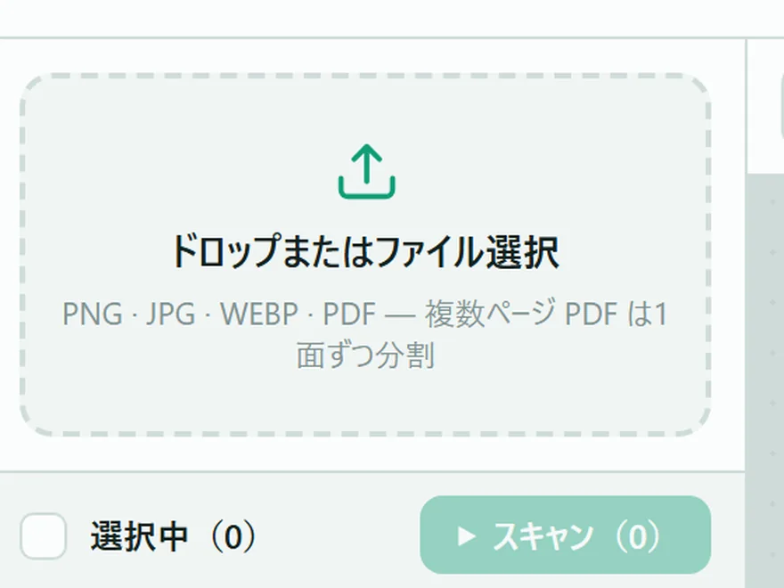
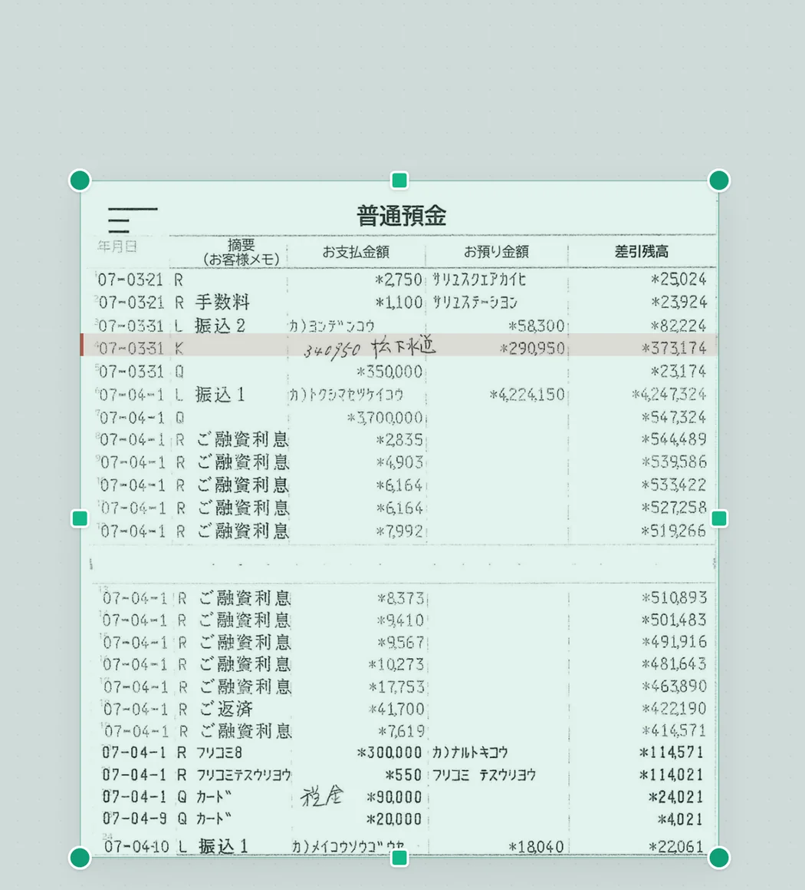
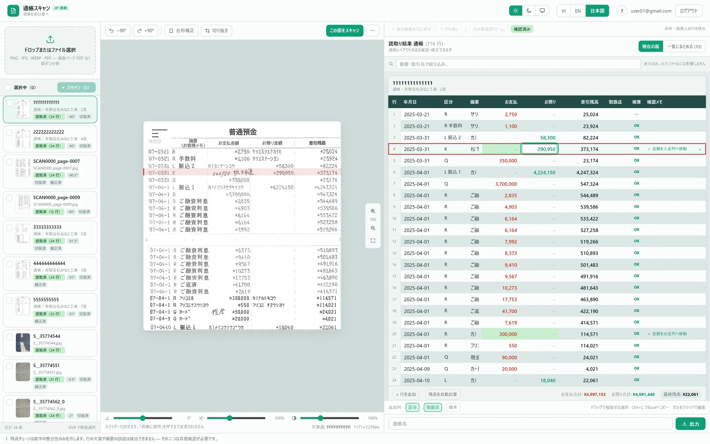

| 年月日 | 区分・摘要 | お支払 | お預り | 差引残高 | 検算 |
|---|---|---|---|---|---|
| 2025-03-21 | R | 2,750 | – | 25,024 | ― |
| 2025-03-21 | R 手数料 | 1,100 | – | 23,924 | |
| 2025-03-31 | L 振込2 | – | 58,300 | 82,224 | |
| 2025-03-31 | K | – | 290,950 | 373,174 | |
| 2025-03-31 | Q | 350,000 | – | 23,174 |

| 年月日 | 区分・摘要 | お支払 | お預り | 差引残高 | 検算 |
|---|---|---|---|---|---|
| 2025-03-31 | L 振込2 | – | 58,300 | 82,224 | OK |
| 2025-03-31 | K | – | 209,950 | 373,174 | NG |
| 2025-03-31 | Q | 350,000 | – | 23,174 | OK |
| A | B | C | D | E | |
|---|---|---|---|---|---|
| 1 | 銀行名 | 〇〇銀行 普通預金 | |||
| 2 | 検証 | 残高チェーン検証済（全行一致） | |||
| 3 | 年月日 | 摘要 | お支払金額 | お預り金額 | 差引残高 |
| 4 | 2025/03/21 | R 手数料 | 1,100 | 23,924 | |
| 5 | 2025/03/31 | L 振込2 | 58,300 | 82,224 | |
| 6 | 2025/03/31 | K | 290,950 | 373,174 | |